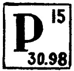

FOSFORO:

El fósforo es un elemento químico de número atómico 15 y símbolo P. El nombre proviene del griego f?? ("luz") y f???? ("portador"). Es un no metal multivalente perteneciente al grupo del nitrógeno (Grupo 15 (VA): nitrogenoideos) que se encuentra en la naturaleza combinado en fosfatos inorgánicos y en organismos vivos pero nunca en estado nativo. Es muy reactivo y se oxida espontáneamente en contacto con el oxígeno atmosférico emitiendo luz.
 Ir a página principal
Ir a página principal